|
|
|
|
|
From Singapore to Penang
8th December 2008 07 57.0N 98 26.8E Ko Rang Yai
Greetings all,
Even though it’s only been a few days since we got our last email off, we are so behind we really should make a start on this straight away. And hopefully, over the next days, we’ll have some time. But when we’ll get internet again to send it - mind, that may be different.
But for the minute, it’s just after lunchtime and we’re anchored off the sandy beach of Ko Rang Yai – a tiny little island off Phuket, waiting for the right tide so we can get into Royal Phuket Marina. For the first time in as long as we can remember, we have a bit of time to catch our breath – but how did we get here?
Pirates and Squalls – thankfully not, but a fair few fishing boats
The last email found us just leaving
Singapore having stopped off at Customs and Immigration off
the Twin Sisters Islands to get the paperwork stamped
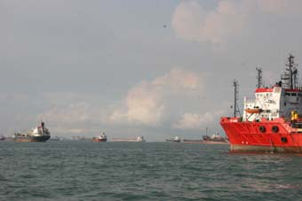
The west of Singapore is another vast car park for ships, but we’d learned our lesson coming in so weaved our way through them before coming across an enormous land reclamation project. All around us were tens of tugs, each with a vast barge full of soil and sand lumbering along behind them.
All too soon, we’d left Singapore waters behind and with Malaysia to starboard, we started to head north again.
Into the famed and feared Malacca Straights, home to pirates and the feared Sumatras.
Well, today the pirates aren’t such a problem, most are languishing in Singapore jails and those few left much prefer a big ship with $500,000 in its safe to a poor little yacht. But the Sumatras are another matter.
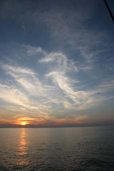 It’s a brute of a line squall that builds over Java and Sumatra, then sweeps east across the straights – generally around dawn. Winds of 60kts are not unusual and even though short lived, missing such a bit of weather was a fair priority.
But most of the weather was perfect.
As usual, we planned out our route, this time as far as Port Dickson. Mostly this is just a matter of sitting with the chart plotter, the chart and any pilotage information we have to hand. You work out where you want to go, setting a few waypoints along the way, either just to mark places you’ll be passing, or to ensure you don’t get too close to any nasty little dangers like wrecks or rocks. In many place you’ll also be factoring things like currents, but there’s a pretty consistent set in the straights so we ignored it.
Then you work a few anchorages – either as possible places to stay overnight, or shelter if the weather gets nasty - with notes on tidal ranges to hand so you don't find your bottom bumping as the tide falls.
We were not surprised when we were faced with little wind so, sadly, as has become usual, found ourselves motor sailing again. The first overnight anchorage was perfect, offering shelter from both wind and swell so we set the anchor alarm (an alarm on the GPS that goes off if you drift further than you set as the limit) and had a great nights sleep.
The next day was a good run, but the wind and swell started to build in the afternoon. The bay we’d planned to stop wasn’t great (albeit the best in that stretch) being pretty exposed, but we thought there was a nice corner we could tuck behind. Except, we found the river that came out nearby had been dumping silt into the bay since the chart was made (in the 1930’s) – it was way too shallow.
With this nice wind though, it wasn’t hard to decide to do an overnighter and head on. We’d heard horror stories about fish traps and lots of fishing boats – the former you can’t see at night so you head offshore a bit into deeper water, the latter you can see, although they show the usual mix of lights that were never thought off when ColRegs were written.
But it was a grand night, albeit dodging all these fishing boats. At one time we counted 52 boats ahead of us and a similar number behind. What makes it interesting is some are seine fishing – with a net between two boats. At least they were heading in exactly the opposite direction to us so it was just a matter of heading for the bigger gaps.
And on to Penang
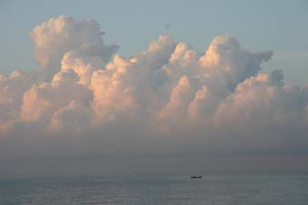 For once, we got it right and dawn found us just off Port Dickson and the Admiral Marina where we planned to stop a night and top up the tanks. Then we looked behind us and saw the most incredible front of towering thunderclouds. Is this a dreaded Sumatra coming down on us? Never having seen one, we took no chances and rushed into the Marina, finally getting a reply to our calls on the radio just as we arrived.
As it turned out, it wasn’t a Sumatra, just
some very big clouds, but it got the pulse rate up a bit. 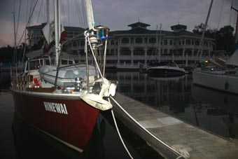
We left from the Marina (and it is a very very posh one) at dawn for a pretty straightforward run to Penang and Limbongan Batu Muang (herein known as LBM), the shipyard we’d arranged to haul-out and re-antifoul in preparation for the Indian Ocean passage in the New Year. We’d actually arrived a few days early so we dropped the anchor up in Seagate, a small passage between the main island of Penang and Palau Jerejak, and grabbed a cab into the main town of Georgetown to go through the usual officialdom paper chase and check out the local suppliers.
Fortuitously, one supplier, the main chandler, Pen Marine, is part of the LBM group and CK, the owner, was popping down to LBM that afternoon so kindly offered us a lift down there. Since LBM is at the other end of the island, we accepted with alacrity.
Well, LBM was an eye-opener – basic and dirty
were our first impressions,
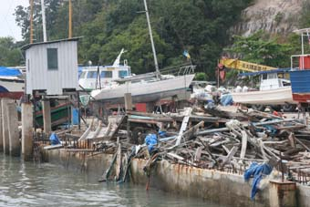
The next day was spent preparing the boat as much as we could before heading back into Georgetown where we discovered Chulia St, a strip of hardware shops interspersed with Backpacker Hostels and Bars. We were looking to replace a couple of power tools that had died then tried out a couple of the bars.
Five weeks with LBM
The next day, we upped the anchored and
motored around to about a mile off LBM. The tides are such
that there’s a strong cross current to the dock so you try
and time to go in on slack water. Well, they kept us
waiting for nearly 3 hours by which time 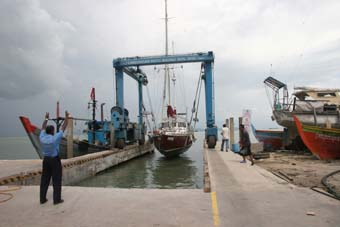
Once in the dock, the Travelhoist crawls
towards you like a prehistoric monster (it was a small one,
we had to disconnect our forestay to fit) and the diver went
in to attach the slings. 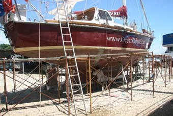
The monster’s motor roared and we lifted out the water. After a pressure spray to clean the slime off the bottom, they placed us into a precarious looking, but solid set of frames – and we were done.
Well, not so much done, just starting.
We won’t bore you with the tales of the next
five and a half weeks. Just to say that we’d planned to be
out for two, maybe three weeks, but a combination of rain,
rain and more rain and
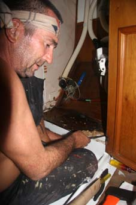
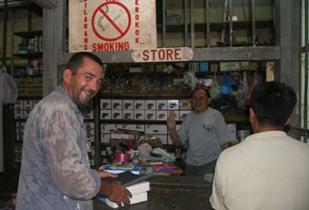 LBM is primarily a ship repair yard, taking ships up to maybe 200 feet in size – not small, but not big either. By Western standards, it’s interesting – rubbish everywhere, and this includes large bits of ships, a dozen stray dogs running around, H & S is somewhat limited (the young lad who sanded down our antifoul was wearing a dusk-mask, but most of the time it was around his neck with a cigarette in his mouth). But the quality of the work they do, especially that out of the machine shop, was first rate. And their stores had everyting you might need.
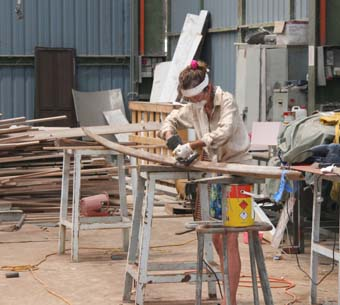
Good friends at LBM and haircuts in Georgetown
It was also a chance to meet some of the others working on their boats. Some were short term, one boat went back into the water the day after we’d arrived having been out for just 2 days to antifoul. Some, like Roger had been out of the water for over a year, but then he kept heading back home for months at a stretch – more or less using LBM as cheap storage. A French catamaran that had been out for over two years and the family made major alterations – like lengthening it by 6 feet (they were back in France when we arrived, having left their Labrador "Colum" to be cared for by the other yachties). Leo and Anne, a lovely Kiwi couple whose boat looked like Hinewai’s kid sister, had just finished a major 5 month refit and finally got afloat again a couple of days before we did.
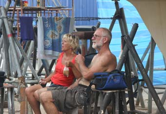
And our bestest friends – Phil and Helen, who
were slowly getting towards the end of a six-month refit on
Meridian, a beautiful 30 year old steel boat from Tassie
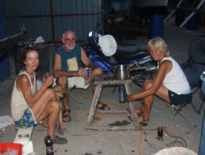 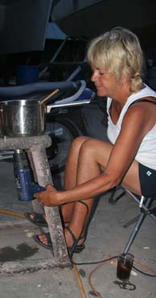
Indeed, one endearing memory was Helen, half way though preparing dinner, running out of gas. Ever resourceful, we found her cooking in a saucepan over a hot air gun.
Once a week, we’d treat ourselves and head into Georgetown, becoming regulars at the BBQ Bar and Café in Chulia Street, run by a fiery lady called Esme. Just round the corner was Little India and we’d wander around the shops and stalls, lapping up the sights, sounds and smells – eating at a little Indian restaurant where the waiters never wrote anything down – and never got anything wrong.
Peter’s been running with pretty short hair
in the hot areas and one night decided to pop into an Indian
barber for a quick #2. There is no such thing in an Indian
barbers as a quick #2. Once in the chair, it became pretty
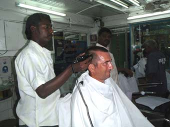
Then a shave – cut-throat of course – Peter always get’s this overwhelming urge to swallow at the wrong moment. Once shorn, multiple applications of hair gel, alcohol rubs and other strange substances. He was very nervous around open flames for a couple of days after that.
And then, the massage. This was a mixture of very hard rubbing of the scalp, interspersed with hitting it – hard! And to finish – the neck stretch. You know those awful sounds you get with a chiropractor – imagine a barber doing that to your neck. After every set of cracks, Peter found himself wiggling his toes just to check all was working still.
But the best thing of all was the atmosphere
– everyone was chatting away (or trying to) – laughing, just
having fun. And when Jean came back to find Peter still in
the chair, and decided to ask if she could take some photos
– well, it was on for young and old. 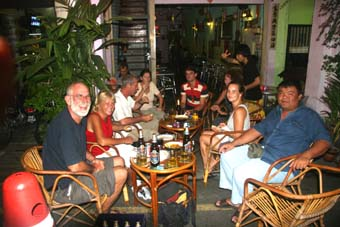
Without doubt though, the high point of Penang was the people we met. Phil and Helen would generally come down to the BBQ with us each Saturday and we met a fine assortment of people there. One I’d even heard of – a Swedish gentleman called Nils, now late 70’s whose been sailing around the world in a 23ft boat (just half the size of Hinewai) called Peter Pan for over 20 years.
Friends rallying round
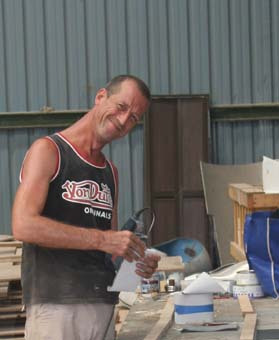
And Peter and Ella. Peter’s a retired career
soldier in the British Army (ex-Signals) who
married a German lass he met over 30 years
ago. Now living in Penang, we got chatting one night at the
BBQ – well, his Black Country accent still marks him as a
Pom. A couple of Saturday’s later, he offered
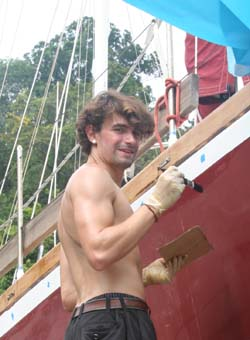
The next Saturday, he asked if he might bring Simon, a young German traveler who was staying with him and Ella. The more hands, the merrier, we thought – and so the next day met young Simon – who would end up being far more than just a pair of hands to help us out of LBM.
Other special memories – the showers, not the
sort you just put your shoes on to go into 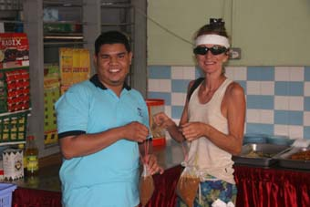 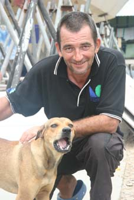
Sam was one of the many feral dogs that lived at LBM, but was the only one that had befriended the yachties. Maybe only a year old, she’d sleep under the yachts and would be following one of us around all day, collapsing in front of you at every opportunity for a tummy rub. Jean was a special friend since she’d picked up some doggie treats at the supermarket one day.
We’d suggested to Peter and Ella that, as a small thank you, they might like to sail with us up to Langkawi – an offer accepted with alacrity. Sadly, Ella was unwell the week before we left so couldn’t join us, but Simon did – indeed, with the plan he’d come all the way to Phuket with us.
Leaving LBM for Langkawi
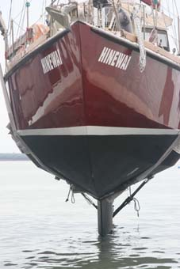 At last, the day came when we were going back in the water. We stocked up the boat, filled the water tanks and the monster Travelhoist straddled Hinewai once again and lifted her clear of her supports. A quick drive through the yard and she was lowered back into the water. Check out the new sexy black hull - we've always used red antifoul before but, like a Model-T Ford, the only Micron 66 available was black.
An hour or so later, after checking all the through-hulls and newly welded patches for leaks, and struggling to re-attach the forestay and re-tension the rig, we slipped the lines and headed round to Seagate – Peter, Jean, Peter and Simon.
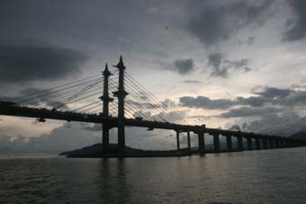 The clock was ticking again – the extra three weeks we’d spent in the yard meant we were getting tight to get up to Phuket for the Kings Cup so we spent a couple of hours doing the last few bits to tidy the boat down, then upped the anchor and headed off to Langkawi, passing under the Phuket/Butterworth bridge – the longest bridge in the Southern Hemisphere.
Langkawi is no great distance and we made it in an easy overnighter, albeit somewhat stressed by multitudes of badly lit fishing boats again. Indeed, as we approached Langkawi, we gave up for a while when the radar showed a solid phalanx of boats coming out of where we were going. Discretion suggested waiting until dawn before entering the harbour.
There are two choices in Langkawi – either
anchoring off in the bay as many yachts do or going into
Royal Langkawi Yacht Club. Since we were planning some
fairly major provisioning (Langkawi, like Labuan, is a Duty
Free Port), we chose the latter and by 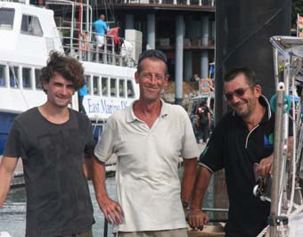
Sadly, Peter of Peneng had to leave us here, but Simon was staying on.
One yacht that had left LBM soon after we got there was owned by Janet and John (and, Yes, they have heard all the jokes already). They are based in Langkawi and John had offered to drive us round when we got there – as he did wonderfully. Not only did he know all the good Duty Free shops, but also where Jean could buy frozen smoked salmon (a tiny little Indian shop miles from anywhere, pretty bare shelves out front – wonderful freezers out back) and Peter could buy all the widgets he needed for the boat.
With the provisioning complete and stowed (it’s amazing where you can find room for slabs of beer, bottles of Rum and oceans of wine casks on Hinewai), it was time to refuel the boat and fill the water tanks. The latter was a disaster. First of all, Peter told Simon to put water in a diesel tank – a real blond moment – which necessitated opening the tank up, draining it (ditching some 50ltrs of fuel,) and cleaning it thoroughly. Then once we did get to fill the right tank, and thankfully just one, the water’s turned out to be tainted. Despite flushing it out and treating a new batch of water with Iodine, the tank is still suss – at 25% of our water, it’s one problem we must solve before the Indian Ocean.
All this faffing about cost us another day, and the pressure is now well on for the Kings Cup. We popped round to the Ferry terminal where the Port Authority, Customs and Immigration live and finally signed out of Malaysia. When we arrived the Aussie Dollar was buying 3.5RM, when we left it was 2.1RM, but, excepting dealing with Celcom, we’d had a wonderful three months.
Onto Thailand
Now we faced a three day sail up to Phuket and Thailand, and the King's Cup Regatta. But now seems a good time to finish this – the next email, hopefully soon following this, might even get us up to date.
Hugs
Peter & Jean
Next Log Page: On to Thailand and the Kings Cup
|
|
|
|
|
|
|
|
The Crew The Route The Yacht The Log Guestbook Links Contact Us |
|
|
|
|
|
Home |
|
|
All Original Content of this Web Site Copyright © 2000, 2001, 2002, 2003, 2004, 2005, 2006, 2007, 2008, 2009 Ocean Odyssey Pty Ltd |
 It was an odd lifestyle those weeks. The
first couple of weeks were a pain, with much of what we
wanted to do being curtailed by the rain –
It was an odd lifestyle those weeks. The
first couple of weeks were a pain, with much of what we
wanted to do being curtailed by the rain –